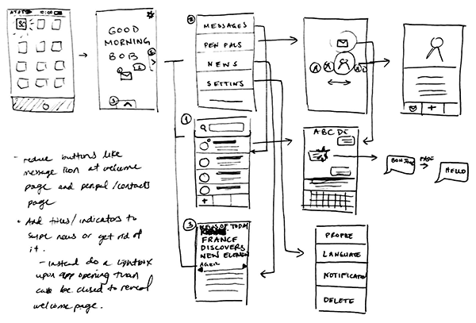
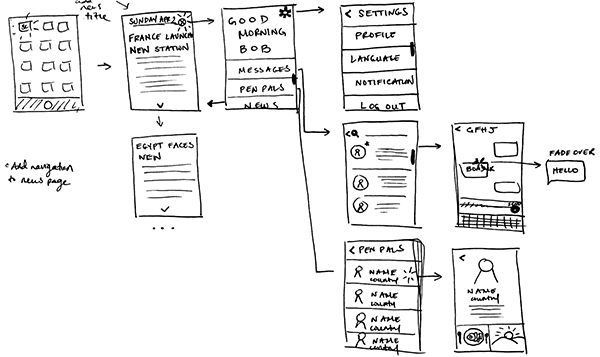

Paper Prototype
To get a better understanding of how the site may flow and how the user may interaction with certain elements, we created a paper prototype for a classmate to test. We did rapid prototyping for a few minutes and received feedback. From that feedback we did a second round of rapid prototyping and shared that with another classmate for feedback.
Prototype 1
Notes:
- Main menu has too many buttons. Add context and simplify.
- Add titles/indicator to swipe arrows.
- Possibly do a lightbox for news to scroll.
- Rethink pathways and buttons or navigation from page to menu etc.
Prototype 2 2
Notes:
- Each main page should have a title to indicate hierarchy in navigation
- limit amount of news availible.